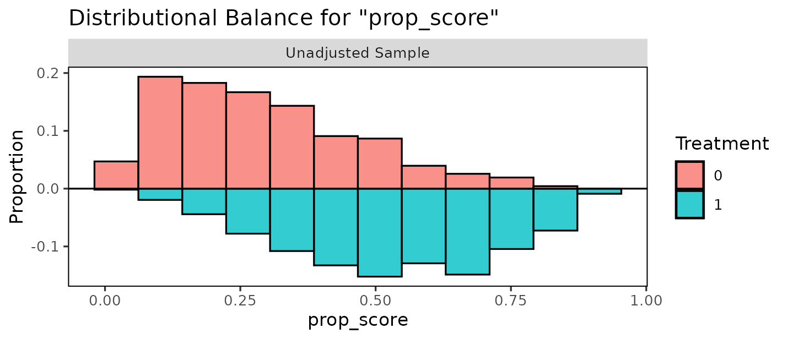

Introduction
BART is a popular choice for causal inference because it allows one to fit the nuisance functionals required for effect estimation (the relationships among the outcome, the treatment, and the potential confounders) in a flexible manner (Hill 2011). BART has repeatedly been shown to outperform other effect estimation methods in competitions (Dorie et al. 2019). In this vignette, we demonstrate how to use BART implemented in bartisan to estimate treatment effects. This includes both standard BART as well as Bayesian causal forests (BCF), which is an improvement on traditional BART that works by fitting separate BART models for the outcome under control and for the treatment effect itself.
However, it’s important to remember that BART is not a “causal inference method”; it is just a method of estimating certain quantities, which often are interpretable as associations. The assumptions that turn an association into a causal effect are assumptions about the design, and no model supplies them.
The example is the one the data were collected for: whether right heart catheterization helps or harms critically ill patients (Connors et al. 1996).
Confounding is the whole problem
Catheterization was not randomized. Doctors chose it, and they chose
it more often for patients who were already doing badly. Those patients
were also more likely to die. We can use cobalt::bal.tab()
to see how the patients differ between groups:
bal.tab(rhc ~ age + sex + race + edu + aps + meanbp + resp +
hema + pafi + paco2 + crea + surv2m + card,
data = rhc, stats = c("m", "ovl"), disp = "m")
#> Balance Measures
#> Type M.0.Un M.1.Un Diff.Un OVL.Un
#> age Contin. 61.816 60.756 -0.065 0.101
#> sex_male Binary 0.524 0.591 0.067 0.067
#> race_white Binary 0.793 0.768 -0.024 0.024
#> race_black Binary 0.157 0.168 0.011 0.011
#> race_other Binary 0.050 0.064 0.013 0.013
#> edu Contin. 11.568 11.767 0.061 0.048
#> aps Contin. 51.369 62.099 0.530 0.223
#> meanbp Contin. 85.302 66.871 -0.505 0.231
#> resp Contin. 28.841 27.465 -0.097 0.055
#> hema Contin. 32.545 30.237 -0.290 0.159
#> pafi Contin. 238.232 182.995 -0.504 0.208
#> paco2 Contin. 40.045 36.871 -0.262 0.096
#> crea Contin. 1.905 2.506 0.292 0.179
#> surv2m Contin. 0.604 0.559 -0.229 0.105
#> card_yes Binary 0.299 0.405 0.106 0.106
#>
#> Sample sizes
#> Control Treated
#> All 935 565The M.0.Un column indicates the mean for each variable
in control group and the M.1.Un column indicates the mean
for each variable in treated group. Diff.Un and
OVL.Un are measures of the distributional difference
between the groups for each covariate; values far from 0 indicate
imbalance due to differential selection into treatment. In particular,
we can see that patients with higher values of aps and
crea and lower values of meanbp, hema,
pafi, paco2, and surv2m are
overrepresented among treated units.
Given that sicker patients are both more likely to die and more likely to receive RHC, it would not be unexpected to see that patients who receive RHC are more likely to die, and we do see that:
However, that doesn’t mean RHC causes death; to distangle the effects of RHC from the confounding effects of pateitns characteristics, we need to adjust for them.
What has to be true
Several assumptions are required to interpret an adjusted effect estimate as causal, none of which the fit can check.
No unmeasured confounding. Every common cause of catheterization and death is in the model. Here that is the crux: the covariates include a physiological profile and the study’s own prognostic score, which is a serious attempt, but a doctor’s judgment at the bedside may not be fully captured by these fourteen variables.
Positivity. Every kind of patient could have received the procedure or not. This one is partly checkable and is checked below.
Consistency. “Catheterization” names a single well defined intervention.
No interference. One patient’s treatment does not affect another’s outcome.
The first is the one that usually fails and the one to be explicit about. State it as an assumption in what you write, rather than letting the interval imply it has been handled.
Checking positivity
Positivity fails when some combination of covariates makes the treatment nearly certain. To look for that, model the treatment and inspect the fitted probabilities in both groups. BART is a good choice for this model too, for the same reason it is a good choice for the outcome: the functional form is not known.
set.seed(2026)
ps_fit <- bartisan(
rhc ~ age + sex + race + edu + aps + meanbp + resp + hema + pafi +
paco2 + crea + surv2m + card,
data = rhc, family = binomial(), chains = 4
)
prop_score <- fitted(ps_fit)We can use cobalt::bal.plot() to examine the overlap of
the propensity score distribution between the groups:
bal.plot(rhc ~ prop_score, data = rhc, type = "hist", mirror = TRUE)
What matters for positivity is that the two groups overlap over most of their range, and they do. Distributions pushed against zero and one with little overlap are what failure looks like, and the honest response then is to restrict the analysis to the region of overlap rather than let the model extrapolate into a part of the covariate space where one treatment was never observed.
This check belongs before the outcome model, not after. A flexible outcome model will happily produce an estimate in a region with no data, and the interval will not tell you that is what happened.
The estimator: g-computation
To estimate the average treatment effect \(\tau_{\text{ATE}} = E[Y(1)] - E[Y(0)]\), which is a function of the unoabsevred potential outcoem \(Y(1)\) and \(Y(0)\), we can use the assumptions above to express it as a function of observed quantities:
\[ E[Y(1)] - E[Y(0)] = E \left[ E[Y | X, A = 1] \right] - E \left[ E[Y | X, A = 0] \right] \] To estimate \(E \left[ E[Y | X, A = a] \right] = \theta_a\), we use g-computation:
\[ \hat{\theta}_a = \frac{1}{n}\sum_{i=1}^n {\mu(a, x_i)} \]
where \(\mu(a, x_i)\) is the predicted value from a regression of \(Y\) on \(A\) and \(X\) for a unit with covariate profile \(X=x_i\) and treatment \(A\) set to \(a\). This estimator is sometimes also known as the “regression estimator” or the “plug-in estimator”.
Here, we use traditional BART and BCF to model \(\mu(A, X)\). The rest of the analysis comes from the definitions above.
One setting to change first
Before we fit the outcome model, we need to change one setting to
make traditional BART suitable for estimating the ATE. The default
splitting prior is a variable-selection prior. It can drop a predictor
from every tree in the forest at once, which is what makes it worth
having when the goal is prediction, and exactly what you do not want
when the estimand is a contrast on one particular predictor. Every
outcome model below is fitted with sparsity = FALSE, which
weights the predictors equally and cannot drop any of them.
The propensity score model above keeps the default, and should:
predicting who was treated is a prediction problem, and no contrast is
read off it. ?bartisan_control has the measurements behind
both halves of this, and split_prior is the alternative
when there are enough covariates that weighting them all alike is
wasteful.
The outcome model
We can fit the outcome model as follows:
set.seed(2026)
fit <- bartisan(death ~ rhc + age + sex + race + edu + aps + meanbp + resp +
hema + pafi + paco2 + crea + surv2m + card,
data = rhc, family = binomial(), chains = 4, sparsity = FALSE)We include both the treatment and covariate in the formula’s
right-hand side, set family = binomial() to model the
binary outcome with logistic regression, and
sparsity = FALSE to remove the sparsity-inducing prior.
Normally, we would examine convergence diagnostics for this model to
make sure it was fit correctly; see vignette("diagnostics")
for more information on how to do that.
Potential outcomes
The quantities underlying every effect below are the two average
potential outcomes: the proportion who would die if every patient were
catheterized, and if none were.
marginaleffects::avg_predictions() reports them
directly.
avg_predictions(fit, variables = "rhc")
#>
#> rhc Estimate 2.5 % 97.5 %
#> 0 0.631 0.602 0.660
#> 1 0.694 0.654 0.729
#>
#> Type: responseThe two rows are the estimates of \(E[Y(0)]\) and \(E[Y(1)]\), each averaged over the observed covariate distribution. Reporting both is often more informative than reporting their difference alone, because a difference of six percentage points means something different against a baseline of 63% than it would against 5%.
The average treatment effect
The effect is the contrast between those two quantities, which can be
requested using marginaleffects::avg_comparisons()1:
ate <- avg_comparisons(fit, variables = "rhc")
ate
#>
#> Estimate 2.5 % 97.5 %
#> 0.0629 0.0109 0.109
#>
#> Term: rhc
#> Type: response
#> Comparison: 1 - 0Under the assumptions above this is the average treatment effect: catheterization raises the probability of death by about 6 percentage points, with an interval running from roughly 1 to 11.
Using Bayesian causal forests
Traditional BART shrinks the fitted function toward a constant; that shrinkage applies to everything the forest fits, including the part of the outcome that depends on the exposure. When the exposure is strongly predicted by the covariates, the forest can explain the outcome using the covariates alone, leave little for the exposure to explain, and shrink the estimated effect toward zero. The interval shrinks with it, so the result is a confident estimate biased toward no effect.
Hahn et al. (2020) identified this mechanism. Their
remedy is to give the treatment effect its own forest with its own
prior, so that shrinking the confounding part does not shrink the
effect, which is the Bayesian causal forest (BCF) model, a special case
of the varying coefficients BART model. bcf() fits it.
One specifies the control function in the model formula and
identifies the treatment in the treatment argument.
bcf() then fits a varying coefficient BART model, the
BCF.
set.seed(2026)
fit_bcf <- bcf(death ~ age + sex + race + edu + aps + meanbp + resp + hema +
pafi + paco2 + crea + surv2m + card,
treatment = ~ rhc, data = rhc,
family = binomial(), chains = 4)
fit_bcf
#> Generalized BART
#>
#> Call:
#> bcf(formula = death ~ age + sex + race + edu + aps + meanbp +
#> resp + hema + pafi + paco2 + crea + surv2m + card, treatment = ~rhc,
#> data = rhc, family = binomial(), chains = 4)
#>
#> Family: "binomial" with the "logit" link
#> Observations: 1500
#> Structure: 2 forests of 50 and 25 trees, soft decision rules
#> Draws: 2000 kept across 4 chains after 500 warmup
#>
#> Posterior means: b.rhc.0 = -0.229, b.rhc.1 = -0.173Using bcf() rather than writing the varying coefficient
BART model by hand sets five settings to improve effect estimation: the
effect gets a forest of its own, the estimated propensity score goes
into the control function and not into the effect forest, the effect
forest gets fewer trees because effect heterogeneity is usually simpler
than a prognostic surface, sparsity = FALSE for the reason
in the section above, and a binary treatment’s coding is drawn rather
than fixed, so the answer does not depend on which arm was written as
1.
The output is just like a regular BART model, so we can use
avg_comparisons() to extract the average treatment effect
estimate.
avg_comparisons(fit_bcf, variables = "rhc")
#>
#> Estimate 2.5 % 97.5 %
#> 0.00995 -0.0105 0.0397
#>
#> Term: rhc
#> Type: response
#> Comparison: 1 - 0Because the effect is a parameter of the model rather than a difference of predictions, it can be read off directly, one value per patient:
coef(fit_bcf)[, "rhc"] |>
quantile(probs = c(0, .25, .5, .75, 1)) |>
round(3)
#> 0% 25% 50% 75% 100%
#> 0.017 0.038 0.046 0.055 0.072That column is the conditional effect for each patient, on
the link scale – here a difference in log odds, because the
outcome is binary. It is not the same number as the contrast above,
which is on the probability scale, and for a binary outcome the
probability scale is the one to report. coef() is for
looking at how the effect varies from patient to patient, not for
reporting its size.
For a family whose link is the identity, the two coincide exactly: the coefficient is the contrast, and averaging it gives the average treatment effect with nothing lost in between.
None of this changes what has to be true for the number to be causal. It changes how the prior treats the effect, not whether the covariates account for selection.
A second example: a continuous outcome, and the ATT
The catheterization question is about a whole population, so the ATE is the estimand. Many questions are not. When a program is offered to a particular group and the question is whether it helped them, the ATT is what to report, and the outcome is often continuous rather than binary.
lalonde, from cobalt, is the standard example:
a job training program, with earnings in 1978 as the outcome.
Participants earned less than non-participants. Taken at face value the program looks harmful, and it is not: participants were selected for being out of work, so they would have earned less anyway. This is confounding in the opposite direction to the catheterization example, and it is why the raw comparison is worth showing before the adjusted one.
set.seed(2026)
fit_earn <- bartisan(
re78 ~ treat + age + educ + race + married + nodegree + re74 + re75,
data = lalonde, family = dpm(), chains = 4, sparsity = FALSE
)
avg_comparisons(fit_earn, variables = "treat",
newdata = subset(treat == 1))
#>
#> Estimate 2.5 % 97.5 %
#> 327 -242 1037
#>
#> Term: treat
#> Type: response
#> Comparison: 1 - 0newdata = subset(treat == 1) is what makes this the ATT:
the individual contrasts are averaged over the participants alone rather
than over everyone. The adjusted estimate is positive where the raw
difference was negative, though its interval is wide enough that the
size is not settled.
family = dpm() is the default for a numeric outcome and
the right choice here. Earnings are heavily skewed with a spike at zero,
which a single normal describes badly; the Dirichlet process mixture
estimates the shape instead of assuming it, and costs almost nothing
when a normal would have done. See
vignette("families").
The two potential outcomes are worth reporting alongside the difference, since a few hundred dollars means something different against a baseline of six thousand than it would against six hundred:
avg_predictions(fit_earn, variables = "treat",
newdata = subset(treat == 1))
#>
#> treat Estimate 2.5 % 97.5 %
#> 0 6309 5658 6824
#> 1 6637 6186 7075
#>
#> Type: responseEverything said above about identification applies here unchanged. The observational Lalonde sample is famous precisely because its covariates are not enough to recover the experimental benchmark, which is a caution rather than a counterexample: it is what the assumption failing looks like.
Moderation
A forest is free to fit a different effect for every covariate
pattern, so asking whether the effect differs across groups needs no
interaction term and no refit. by splits the average.
avg_comparisons(fit, variables = "rhc", by = "card")
#>
#> card Estimate 2.5 % 97.5 %
#> no 0.0644 0.00944 0.114
#> yes 0.0596 0.00299 0.108
#>
#> Term: rhc
#> Type: response
#> Comparison: 1 - 0The estimates differ a little between patients with and without cardiovascular disease. It is tempting to read a difference like that as moderation, and more tempting still when the two intervals do not overlap equally or when one covers zero and the other does not. Neither reading is a test. Comparing two intervals says nothing about whether the quantities they cover differ, because the comparison that matters has an uncertainty of its own that neither interval reports.
The question is whether they differ from each other, which needs the difference itself:
avg_comparisons(fit, variables = "rhc", by = "card",
hypothesis = ~pairwise)
#>
#> Hypothesis Estimate 2.5 % 97.5 %
#> (yes) - (no) -0.00309 -0.0512 0.0211
#>
#> Type: responseThe difference is small with an interval covering zero. There is no evidence of moderation by cardiovascular disease here, and the subgroup estimates should be read as two noisy estimates of one common effect.
Detecting moderation needs much more data than estimating a main effect, and a flexible model does not change that. What it changes is that you are not required to guess the form of the interaction in advance.
What the interval means
The posterior interval is a credible interval for the estimand under the model and under the identification assumptions. It covers uncertainty from having a finite sample and from not knowing the shape of the outcome surface. It does not cover uncertainty about whether the assumptions hold.
An unmeasured confounder does not widen the interval. It moves the
estimate and leaves the interval where it was. This is why a sensitivity
analysis, asking how strong a confounder would have to be to explain the
result away, is a more informative addition than any refinement of the
model. The sensemakr and EValue packages do
this and work from the estimate and its standard error, which
avg_comparisons() provides.
Where to go next
vignette("effects") covers the estimand machinery in
more detail, including subgroup effects and testing whether they differ.
vignette("diagnostics") covers checking the fit, which
should happen before any of this is interpreted.